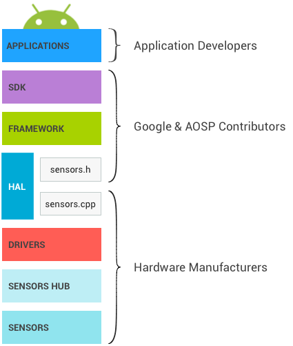

In this document
The figure below represents the Android sensor stack. Each component communicates only with the components directly above and below it, though some sensors can bypass the sensor hub when it is present. Control flows from the applications down to the sensors, and data flows from the sensors up to the applications.
Figure 1. Layers of the Android sensor stack and their respective owners
SDK
Applications access sensors through the Sensors SDK (Software Development Kit) API. The SDK contains functions to list available sensors and to register to a sensor.
When registering to a sensor, the application specifies its preferred sampling frequency and its latency requirements.
- For example, an application might register to the default accelerometer, requesting events at 100Hz, and allowing events to be reported with a 1-second latency.
- The application will receive events from the accelerometer at a rate of at least 100Hz, and possibly delayed up to 1 second.
See the developer documentation for more information on the SDK.
Framework
The framework is in charge of linking the several applications to the HAL. The HAL itself is single-client. Without this multiplexing happening at the framework level, only a single application could access each sensor at any given time.
- When a first application registers to a sensor, the framework sends a request to the HAL to activate the sensor.
- When additional applications register to the same sensor, the framework takes
into account requirements from each application and sends the updated requested
parameters to the HAL.
- The sampling frequency will be the maximum of the requested sampling frequencies, meaning some applications will receive events at a frequency higher than the one they requested.
- The maximum reporting latency will be the minimum of the requested ones. If one application requests one sensor with a maximum reporting latency of 0, all applications will receive the events from this sensor in continuous mode even if some requested the sensor with a non-zero maximum reporting latency. See Batching for more details.
- When the last application registered to one sensor unregisters from it, the frameworks sends a request to the HAL to deactivate the sensor so power is not consumed unnecessarily.
Impact of multiplexing
This need for a multiplexing layer in the framework explains some design decisions.
- When an application requests a specific sampling frequency, there is no guarantee that events won’t arrive at a faster rate. If another application requested the same sensor at a faster rate, the first application will also receive them at the fast rate.
- The same lack of guarantee applies to the requested maximum reporting latency: applications might receive events with much less latency than they requested.
- Besides sampling frequency and maximum reporting latency, applications cannot
configure sensor parameters.
- For example, imagine a physical sensor that can function both in “high accuracy” and “low power” modes.
- Only one of those two modes can be used on an Android device, because otherwise, an application could request the high accuracy mode, and another one a low power mode; there would be no way for the framework to satisfy both applications. The framework must always be able to satisfy all its clients, so this is not an option.
- There is no mechanism to send data down from the applications to the sensors or their drivers. This ensures one application cannot modify the behavior of the sensors, breaking other applications.
Sensor fusion
The Android framework provides a default implementation for some composite sensors. When a gyroscope, an accelerometer and a magnetometer are present on a device, but no rotation vector, gravity and linear acceleration sensors are present, the framework implements those sensors so applications can still use them.
The default implementation does not have access to all the data that other implementations have access to, and it must run on the SoC, so it is not as accurate nor as power efficient as other implementations can be. As much as possible, device manufacturers should define their own fused sensors (rotation vector, gravity and linear acceleration, as well as newer composite sensors like the game rotation vector) rather than rely on this default implementation. Device manufacturers can also request sensor chip vendors to provide them with an implementation.
The default sensor fusion implementation is not being maintained and might cause devices relying on it to fail CTS.
Under the Hood
This section is provided as background information for those maintaining the Android Open Source Project (AOSP) framework code. It is not relevant for hardware manufacturers.
JNI
The framework uses a Java Native Interface (JNI) associated with android.hardware and located in the frameworks/base/core/jni/ directory. This code calls the
lower level native code to obtain access to the sensor hardware.
Native framework
The native framework is defined in frameworks/native/ and provides a native
equivalent to the android.hardware package. The native framework calls the Binder IPC proxies to obtain access to
sensor-specific services.
Binder IPC
The Binder IPC proxies facilitate communication over process boundaries.
HAL
The Sensors Hardware Abstraction Layer (HAL) API is the interface between the hardware drivers and the Android framework. It consists of one HAL interface sensors.h and one HAL implementation we refer to as sensors.cpp.
The interface is defined by Android and AOSP contributors, and the implementation is provided by the manufacturer of the device.
The sensor HAL interface is located in hardware/libhardware/include/hardware.
See sensors.h for additional details.
Release cycle
The HAL implementation specifies what version of the HAL interface it
implements by setting your_poll_device.common.version. The existing HAL
interface versions are defined in sensors.h, and functionality is tied to those
versions.
The Android framework currently supports versions 1.0 and 1.3, but 1.0 will soon not be supported anymore. This documentation describes the behavior of version 1.3, to which all devices should upgrade. For details on how to upgrade to 1.3, see HAL version deprecation.
Kernel driver
The sensor drivers interact with the physical devices. In some cases, the HAL implementation and the drivers are the same software entity. In other cases, the hardware integrator requests sensor chip manufacturers to provide the drivers, but they are the ones writing the HAL implementation.
In all cases, HAL implementation and kernel drivers are the responsibility of the hardware manufacturers, and Android does not provide preferred approaches to write them.
Sensor hub
The sensor stack of a device can optionally include a sensor hub, useful to perform some low-level computation at low power while the SoC can be in a suspend mode. For example, step counting or sensor fusion can be performed on those chips. It is also a good place to implement sensor batching, adding hardware FIFOs for the sensor events. See Batching for more information.
How the sensor hub is materialized depends on the architecture. It is sometimes a separate chip, and sometimes included on the same chip as the SoC. Important characteristics of the sensor hub is that it should contain sufficient memory for batching and consume very little power to enable implementation of the low power Android sensors. Some sensor hubs contain a microcontroller for generic computation, and hardware accelerators to enable very low power computation for low power sensors.
How the sensor hub is architectured and how it communicates with the sensors and the SoC (I2C bus, SPI bus, …) is not specified by Android, but it should aim at minimizing overall power use.
One option that appears to have a significant impact on implementation simplicity is having two interrupt lines going from the sensor hub to the SoC: one for wake-up interrupts (for wake-up sensors), and the other for non-wake-up interrupts (for non-wake-up sensors).
Sensors
Those are the physical MEMs chips making the measurements. In many cases, several physical sensors are present on the same chip. For example, some chips include an accelerometer, a gyroscope and a magnetometer. (Such chips are often called 9-axis chips, as each sensor provides data over 3 axes.)
Some of those chips also contain some logic to perform usual computations such as motion detection, step detection and 9-axis sensor fusion.
Although the CDD power and accuracy requirements and recommendations target the Android sensor and not the physical sensors, those requirements impact the choice of physical sensors. For example, the accuracy requirement on the game rotation vector has implications on the required accuracy for the physical gyroscope. It is up to the device manufacturer to derive the requirements for physical sensors.